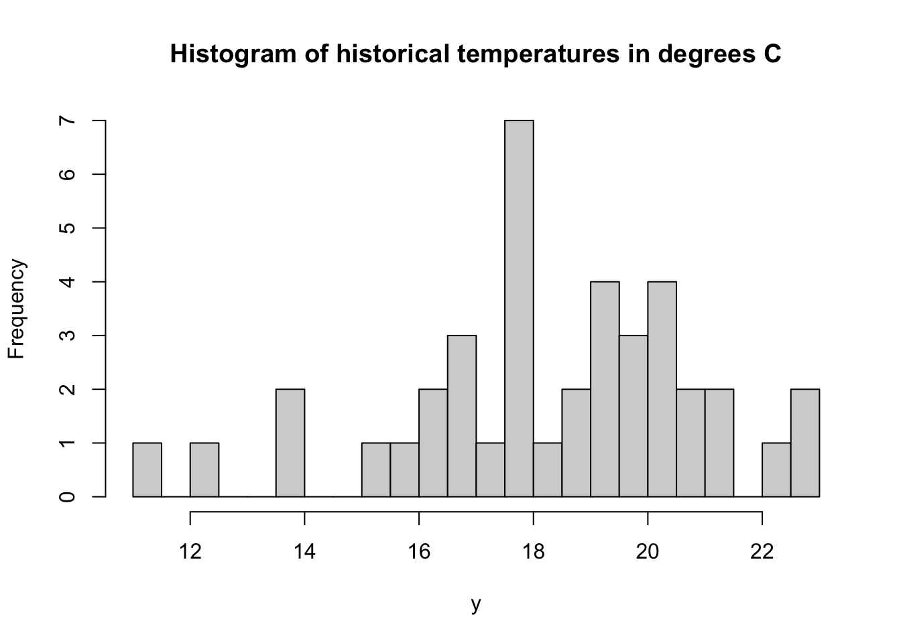
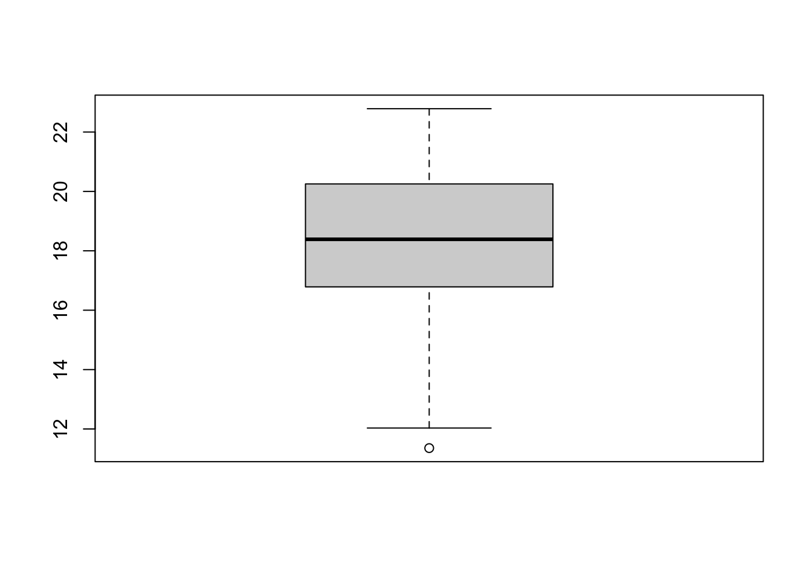
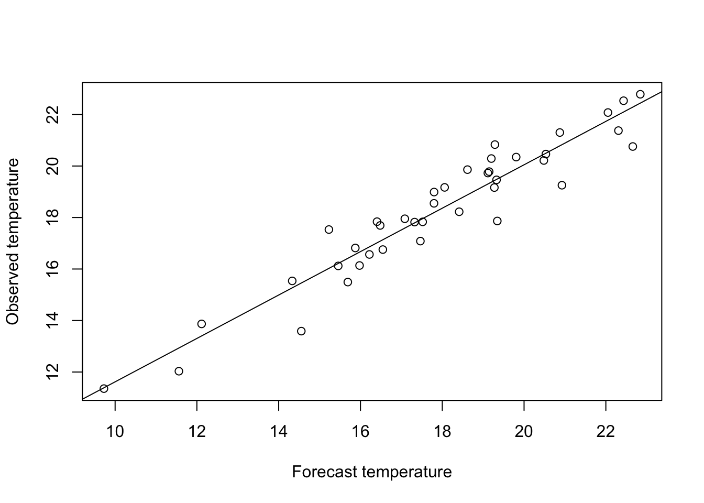

Chapter 2 Example: A very simple time series analysis
Readings: FPP3, Section 5.1.
2.1 The project
Assignment: Write a concept note for a potential project.
Steps in a very simple time series statistical analysis:
- State your question
- Acquire data and background information
- Organize your data
- Perform exploratory analysis of your data
- Write down your model of the data generating process
- If necessary: transform the model and data to make it ready for analysis
- Choose an appropriate technique for estimating model parameters, consistent with your assumptions about your data generating process
- Estimate model parameters
- Confirm that your modeling assumptions are satisfied;
- Compute measures of model quality; confirm that your model is good enough for your purpose
- Use your calibrated model to address your original question.
Examples of using your model:
- Generate a forecast of future events
- Estimate the probability of a future event
- \(\ldots\)
Example problem: Estimating the probability of a weather event
A pub owner in Charlottesville plans to sell beer outside on St. Patrick’s Day, March 17. The pub owner must decide whether to arrange to rent a supplemental refrigeration system for the day.
Supplemental refrigeration offers a form of insurance. If temperatures outside on March 17 are high and the pub owner has not arranged supplemental refrigeration, she will be left with warm beer that she will have difficulty selling, leading to financial losses. Conversely, if she pays for supplemental refrigeration when temperatures are low, she will have incurred an unnecessary expense.
To decide whether to insure herself against loss, she wishes to estimate the probability distribution of temperatures on March 17.
2.2 1. State your question
1. What is the probability that the high temperature on March 17 will exceed 23 degrees Celsius?
2.3 2. Acquire data and background information
Get historical temperature data.
(Here, will simulate the data.)
2.4 3. Organize your data
Let \(y_1, \ldots, y_n\) denote the high temperature in Charlottesville on March 17 for each of the previous \(n\) years.
## [1] 16.12064 18.55093 15.49311 22.78584 18.98852 15.53859 19.46229 20.21497
## [9] 19.72734 17.08383 22.53534 19.16953 16.13628 11.35590 21.37479 17.86520
## [17] 17.95143 20.83151 20.46366 19.78170 20.75693 20.34641 18.22369 12.03194
## [25] 19.85948 17.83161 17.53261 13.58774 16.56555 19.25382 22.07604 17.69164
## [33] 19.16301 17.83858 13.86882 16.75502 16.81713 17.82206 21.30008 20.289532.5 4. Perform exploratory analysis of your data


2.6 5. Write down your model of the data generating process
It is supposed that these data were generated as independent, identically distributed random draws from a normal distribution: for \(t = 1, \ldots, n\),
\[y_t = \theta + \varepsilon_t\] where \(\theta\) denotes the true but unobserved value of the long-run average temperature, and where \(\varepsilon_t \sim N(0, \sigma^2_\varepsilon)\).
2.7 6. If necessary: transform the model and data to make it ready for analysis
Not needed here.
Will consider many cases where it is.
2.8 7. Choose an appropriate technique for estimating model parameters, consistent with your assumptions about your data generating process
For this case, ordinary least squares (OLS) estimation is just fine.
2.9 8. Estimate model parameters
theta_hat <- mean(y) # Sample mean
epsilon_hat <- y-theta_hat # Model residuals
ssr <- sum(epsilon_hat^2) # Sum of squared residuals
sigma_hat <- ssr/(n-1) # Estimated standard error
print(theta_hat)## [1] 18.57157## [1] 7.5062912.10 9. Confirm that your modeling assumptions are satisfied
2.11 10. compute measures of model quality; confirm that your model is good enough for your purpose
forecast_bias <- -0.5
forecast_std_error <- 1
forecast_errors <- rnorm(n,mean = forecast_bias,sd = forecast_std_error)
x <- y + forecast_errors
linear_model <- lm(y~x)
plot(x,y, xlab = "Forecast temperature", ylab = "Observed temperature")
abline(linear_model)

2.6.1 Comments on this statistical model: The risk of model mis-specification
This model asserts several substantive assumptions about the data generating process.
The process is assumed to be stationary. There is no upward trend over time, no long-term climate change, etc.
Temperatures are assumed to be independent from one year to the next. In particular, there is no autocorrelation. Knowing that one year’s temperature was unusually high (say) provides no information about the likelihood that next year’s temperature will also be unusually high. Inter-annual climate cycles (e.g., due to \(El\ Ni\tilde{n}o\)) are ruled out.
Temperature variations around the long-run average are assumed to be identically distributed. This assumption rules out the possibility that variance is, say, greater when temperatures are higher than when they are lower.
And others.
In general, it is important to formulate a statistical model that accurately reflects the true characteristics of the underlying data generating process.
When your statistical model is mis-specified, your probabilistic forecast of future events are likely to stray from the true underlying probabilities. Model mis-specification can then lead to inaccurate estimates of the distribution of losses for each possible action. This error may in turn lead to selection of a sub-optimal action.
A particular problem to guard against is the possibility to underestimate the likelihood of extreme events that could cause catastrophic losses.
That said, your time on this Earth is limited. Depending on the decision problem and the stakes involved, refining your model to get sharper loss estimates may or may not be worth the bother.
A reasonable approach is to start by first writing down a simple forecasting model that appears to capture the essence of the process as you understand it. On the basis of this simple model, generate first-cut probabilistic forecasts of uncertain events. Use these to generate estimated distributions of losses for each possible action in your action set. On that basis, use the specified decision criterion to derive an initial optimal decision rule.
Then, go back and check things over more carefully. Review the realism of your statistical model, given your understanding of data generating process. Plot and examine the distribution of your prediction errors. Do your prediction errors appear to follow a pattern that matches what you would expect, given the assumptions you have made?
If you find evidence that your prediction model is mis-specified, it may be worth it to go back and refine your model, and see if you generate different results.
One very good idea is to perform a sensitivity analysis. How sensitive are your decision recommendations and outcomes to the assumptions you’ve built into your statistical model? If you are not highly confident in your statistical assumptions, and if those assumptions turn out to matter a lot for your recommendations and outcomes, then it could very well be worth the bother to revisit those assumptions, and investigate alternatives.
On the other hand, if your decision recommendations are not highly sensitive to your statistical assumptions, then keeping your initial model may be defensible. The point of this work is not to build the best possible prediction system, bullet-proof against any statistical criticism. The point is to help people make good decisions – or at least, decisiions better than they would have made otherwise. Your time and other resources are limited. A good-enough model may be good enough.